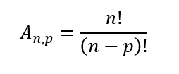
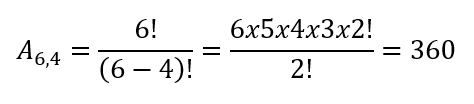

O arranjo está interligado diretamente com análise combinatória e suas funcionalidades, não podemos falar dele sem citá-la.
A análise combinatória surgiu no século XVII, como um campo a mais no estudo da matemática com regras associadas à contagem. Seu propósito inicial era possibilitar a realização de contagens cada vez mais precisas, no início o estudo sobre jogos envolvendo dados e cartas fez com que as teorias de contagem se desenvolvessem grandemente. Além de possibilitar a construção de grupos e de quantas maneiras algo pode acontecer, a Análise combinatória ajudou até mesmo outras áreas da matemática como a probabilidade e o binômio de Newton. Na análise existem 7 procedimentos principais mas o que vamos falar é do arranjo, que é um dos tipos de agrupamentos estudados dentro de análise combinatória, onde os agrupamentos são formados com n elementos tomados de p em p, sabendo-se que n > p.
A distinção do arranjo para os outros agrupamentos presentes na análise combinatória é que, enquanto na combinação a ordem dos elementos não é importante, ao se realizar o arranjo é essencial considerar a ordem desses elementos. Outra divergência é que na permutação todos os elementos estão envolvidos no agrupamento, porém no arranjo apenas um conjunto p desses elementos serão considerados a partir do universo n.
Um exemplo da aplicação do arranjo é a elaboração de senhas; suponhamos que com os algarismos 1, 3, 5, 6, 7 e 9 você queira montar uma senha de 4 dígitos distintos para o seu cartão de crédito. Portanto, você decide optar pela senha 5193. Uma outra pessoa, que iria montar uma senha com a mesma estrutura, optou pela senha 9153. Nesse momento, é possível observar uma característica primordial do arranjo vindo a tona: as senhas 5193 e 9153 possuem exatamente o mesmo agrupamento de elementos, porém elas são distintas entre si devido a ordem que esses elementos são apresentados, pois é um senso comum de que não se acessa o cartão de crédito de uma pessoa apenas digitando todos os algarismos da senha: é necessário que a ordem também esteja correta.
Já obtido uma conceituação melhor sobre o arranjo e qual é sua característica principal, é importante ter o conhecimento de sua fórmula que permite saber quantos arranjos são possíveis a partir de n elementos tomados de p em p. Essa fórmula se apresenta como a seguinte:

Tomando a situação anterior da senha do cartão de crédito, utilizaremos essa fórmula para descobrir a quantidade de senhas possíveis, considerando que n seria representado pelo valor 6 (total de algarismos) e que p seria representado pelo valor 4 (total de dígitos para montar a senha). Sua resolução seria da seguinte maneira:

Portanto, conclui-se que para essa situação há 360 arranjos possíveis de senhas, considerando que há possibilidades de agrupamentos com os mesmos elementos em ordens diferentes.